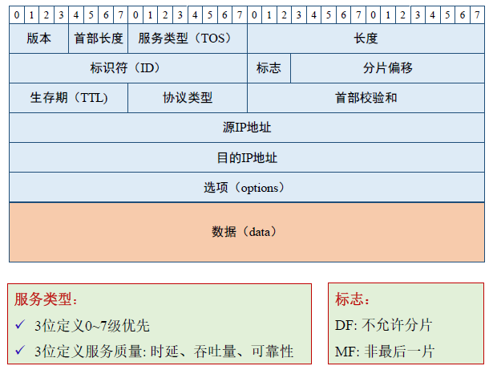

计算机网络 第四章 网络层协议
提纲
网络层功能 IP协议（数据面）
-
IPv4数据包格式和地址
-
IPv4数据包转发
-
IPv4地址问题及解决策略
-
IPv6基础
ICMP协议
-
路由算法（控制面）
-
链路状态算法
距离向量算法
互联网路由协议：RIP,OSPF, BGP
软件定义网络（SDN）
4.1 网络层功能
网络层功能部署
网络层在每台主机和路由器中实现
发送端：将传输层数据单元封装在数据包中
接收端：解析接收的数据包中，取出传输层数据单元，交付给传输层
路由器：检查数据包首部，转发数据包
网络层关键功能
路由（控制面）:决定数据包从源主机到目的主机的路径
- 核心：路由算法与路由协议
转发（数据面）:将数据包从路由器的输入接口送到输出接口的过程
控制面分为分布式的和集中式的
4.2 IP协议-IP服务
面向无连接的数据报服务
- 不需要提前建立连接
- 数据包基于目的主机地址进行转发
- 数据包独立转发，相同源-目的的数据包可能经过不同的路径
尽力而为（Best-effort）的不可靠服务
- 数据包可能会产生较长的时延
- 数据包可能会丢失、失序、重复
IPv4数据包格式

IP地址：32位二进制逻辑地址，实现互联网络统一编址，标识主机和路由器的接口
接口：将主机和路由器连接到物理网络
-
路由器一般有多个接口
-
主机可以有一个或多个接口
-
IP与物理接口绑定
IP地址表示：点分割的十进制，如：223.1.1.1
IP地址层次：
-
网络号部分（net-id）
-
主机号部分（host-id）
什么是一个IP网络：
-
位于同一个物理网络
-
设备接口的IP地址的网络号部分相同，主机号部分不同
IPv4地址：如何获取
公有IP地址要求全球唯一，由区域互联网注册机构（RIR，Regional Internet Registry）或ISP分配
静态设定：
- 申请固定IP地址，手工设定
动态获取：
-
使用DHCP协议或其他动态配置协议
-
当主机加入IP网络，允许主机从DHCP服务器动态获取IP地址
-
可以有效利用IP地址，方便移动主机的地址获取
IPv4数据包转发
查表转发（网技讲过）
由路由协议和IP协议建表
IP数据包分片与重组
每种物理网络都规定MTU
- 不同的物理网络MTU可能不同
较大的IP数据包在路由器转发时可能会被分片
- 只有在最终的目的进行重组
- IP数据包首部中的一些域段用于IP数据包的重组
为什么在路由器不能重组IPv4数据包？
- 如果下一跳路由器的MTU更小，重组后还需再分片，效率低下
- 分片过后的数据包的每一片路径可能不同
路由器转发IP数据包过程：总结
路由器确定IP数据包中目的地址的网络号
如果目的主机与路由器属于相同的IP网络，则直接转发到目的主机
如果目的主机与路由器不属于相同的IP网络，则查找路由表，确定下一跳路由器地址
-
如果存在相应的路由信息，则转发
-
如果没有相应的路由信息，则丢弃
减小TTL值，修改首部的校验和
将数据包转发到相应的接口
按类划分的IP地址存在的问题
net-id和host-id两部分划分不灵活
无类地址划分(CIDR)
IP地址分为前缀和后缀两部分
- 一个前缀不一定标识一个物理网络
前缀可以是任意长度，前缀和后缀长度用32为掩码标识
CIDR 路由聚合
网络地址转换NAT
NAT面临的问题
- 破坏端到端原则，应用部署困难
- 代换，对网络性能有影响
- 安全溯源、网络监管困难
IPv4局限性
- 资源枯竭
- 路由成为互联网瓶颈
- 服务质量
- 配置繁琐
解决方法
- 无类型域间选路CIDR
- 网络地址转换NAT
IPv6互联网的优势
- 解决地址耗尽的问题 更大的地址空间32bit-128bit
- 自动配置的支持
- 无状态地址自动配置
- 有状态地址自动配置
- 改善网络性能
- 方便业务开展，无需使用NAT
4.3 ICMP协议
ICMP封装在IP报文中
Tracert
4.4 路由算法
目标：确定从源主机到目的主机的最优路径
最优路径：一般为代价最小的路径
路由算法的分布式实现
- 路由器之间交互路由信息或链路状态信息
- 每台路由器独立计算最优路径
抽象
- 路由器：点
- 物理链路：边
-
代价：边权
-
链路代价
- 路径代价
重点难点：毒性逆转、分布式算法
4.5 互联网路由协议
互联网层次化路由
扩展性问题
- 目的网络太多
- 路由表庞大，存储查找困难
- 路由信息交互量大，额外开销高
管理的自治问题
- 互联网由大量自治域构成
- 自治域独立管理
自治域内路由：内部网关协议IGP
- RIP路由信息协议
- 开放最短路优先协议OSPF
- 中间系统-中间系统IS-IS
- 内部网关路由协议IGPR
自治域间路由
- 网关协议BGP-4
BGP协议
- eBGP:从相邻的AS获得网络可达信息
- iBGP:将网络可达信息传播给AS内的路由器
基于网络可达信息和策略决定到其他网络的“最优”路由
BGP报文包括
-
Open报文：用于建立BGP对等体（peer）之间的会话连接，协商BGP参数（该过程需要认证）
-
Update报文：用于在对等体之间交换路由信息
-
Keepalive报文：用于保持BGP会话连接
-
Notification报文：用于差错报告和关闭BGP连接
4.6 软件定义网络SDN
解决的问题
- 传统网元设备体系结构相对封闭，如交换机、路由器、NAT等，软硬件之间紧耦合，缺少开放性
- 创新应用、部署业务相对困难，网络升级速度缓慢；网络控制不够灵活，不能有效利用网络资源
基本思路
- 定义开放的体系结构
- 控制平面和转发平面分离
- 通过软件编程定义和控制网络，提高网络控制的灵活性
软件定义网络核心思想
解耦
- 将控制平面和数据平面进行分离，解决传统网络中控制平面和数据平面在物理上紧耦合导致的
问题解决的问题
-
控制平面和数据平面之间不需要相互依赖，只需要遵循一定的开放接口即可进行通信
-
控制平面：负责决策控制，由软件实现，灵活
-
数据平面：专注数据转发，可有由通用硬件实现
抽象
- 转发抽象：将数据平面抽象为通用的转发模型，如Openflow的交换机模型，各种转发表项，如MAC地址表、路由表、NAT转换表等，抽象为统一的流表
- 分布状态抽象：控制层将设备的分布状态，抽象成全局的网络视图，从而实现逻辑的集中控制，具体可以通过网络操作系统来实现
- 网络操作系统（NOS）：下发控制命令，收集设备和链路状态，为上层应用提供全局网络视图
- 配置抽象：网络行为的表达通过编程语言实现，将抽象配置映射为物理配置，利用控制器提供的API，通过控制器配置全局设备